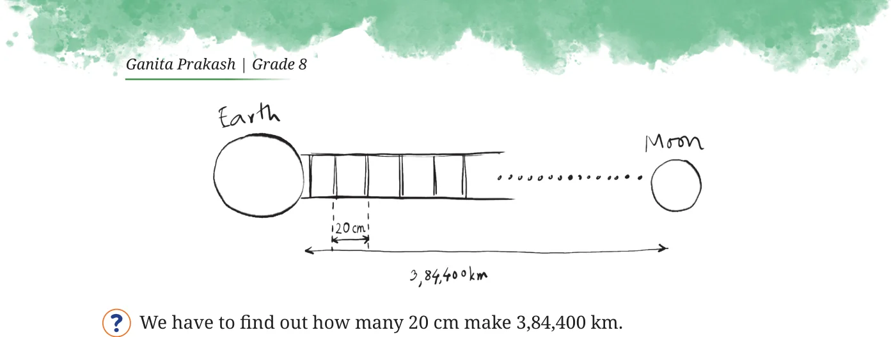

Roxie tells Estu about a science-fiction novel she is reading where they build a ladder to reach the moon, "... I wonder if we actually had a ladder like that, how many steps would it have?".
What do you think? Make an instinctive guess first.
Would the number of steps be in thousands, lakhs, crores, or even more? To find out, we would need to know the gap between consecutive steps of the ladder. Let’s assume a reasonable distance of 20 cm. Visualising the problem as shown,

If we calculate the value, we get the result as 1,92,20,00,000 steps, which is 192 crore and 20 lakh steps or 1 billion 922 million steps. The fixed increase in the distance from the earth with each step (a 20 cm gain after each step) is called linear growth. To cover the distance between the Earth and the Moon, it takes 1,92,20,00,000 steps with linear growth whereas it takes just 46 folds of a piece of paper with exponential growth! Linear growth is additive, whereas exponential growth is multiplicative.
\(20 + 20 + 20 +\) ………… \(0.001 \times 2 \times 2 \times 2\) ……….
1,92,20,00,000 46 times times
Some examples of exponential growth we have seen earlier in this chapter are ‘The Stones that Shine’, ‘Magical Pond’, ‘How Many Combinations’. We shall explore more such interesting examples in a later chapter and also in the next grade.
Can you come up with some examples of linear growth and of exponential growth?